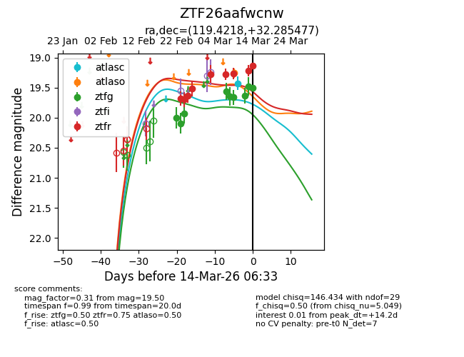
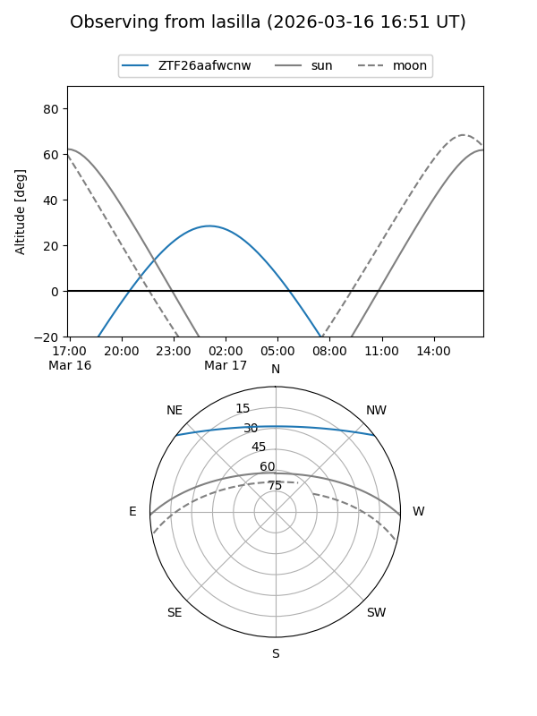
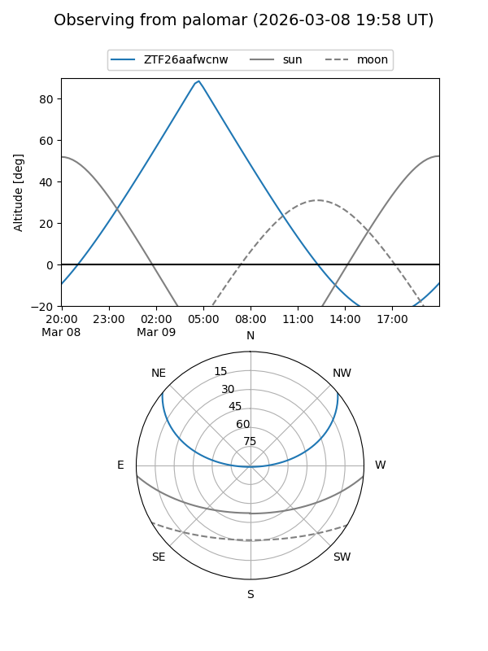
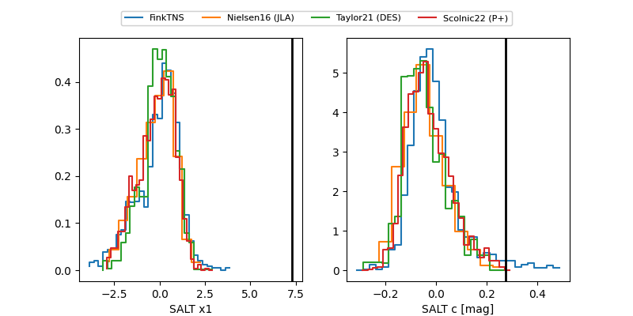

ZTF26aafwcnw
Target ZTF26aafwcnw at 2026-03-14 06:35
Aliases and brokers:
FINK: link
Lasair: link
ALeRCE: link
alt names
ZTF26aafwcnw (ztf,fink_ztf)
Coordinates:
equatorial (ra, dec) = 119.4218,+32.28548
equatorial (HMS+DMS) = 07:57:41.24,+32:17:07.72
galactic (l, b) = (188.6545,+27.26036)
Flags:
Photometry:
last atlasc=19.43, atlaso=19.26, ztfg=19.50, ztfr=19.13
1 atlasc, 1 atlaso, 9 ztfg, 9 ztfr detections
Lightcurve

Visibility


Additional plots
